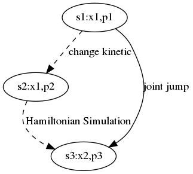

Table of Contents
哈密顿蒙特卡洛是一种有潜力的方法，与深度学习技术结合，它可用于研究高维非线性模型。
本文讨论哈密顿蒙特卡洛算法的稳定性和正确性问题，及其改进方案。
这里的主要思想是：
- 一个稳定的哈密顿仿真的总能量应当守恒
- 正确的抽样应该满足详细平衡方程，或者Metropolis-Hastings
比如如下这个仿真，红色的是位置-势能轨迹，黑色是位置轨迹，而蓝色是势能（对应概率）的三倍标准差界限。 如果总能量守恒，则最大势能是一个常数，则仿真可以持续进行下去。

反之,如果总能量不守恒:
- 总能量持续变大，则最大势能也会持续变大，导致仿真发散;

- 总能量持续变小，则最大势能也会持续变小，导致仿真停止。

因此保持能量守恒对于哈密顿蒙特卡洛方法的正确和稳定地运行非常重要。
一般而言，势能与位置有关，动能则与动量有关。
如果针对一个系统（比如一群气体粒子），将总能量守恒原则进行展开，则意味着：
- 如果系统的势能之和为常数，则系统的动能之和也是常数。
- 如果系统的势能与位置有关，则系统的动能也与位置有关。
在统计计算中，我们一般研究第二种情况。这意味着不同位置对应的动能之和不同，对应的动量分布也不同。因此在仿真算法中，如果在不同位置，以相同分布（比如标准正态）生成动量初始值，那么就破坏了能量守恒原则。
Metropolis
这里先介绍Metropolis算法，然后再分析HMC算法在正确性和稳定性方面存在的问题及其解决方法。
受到krauth的statistical mechanics algorithm and computation的启发，我们采用扔皮球的方式进行讨论。
Metropolis
此时从位置a扔一个皮球，假设皮球只能落在位置a,b,c，而且皮球将等可能地落在这三个位置上。
系统处于a,b等位置的静态概率 \[\pi(a),\pi(b),\dots\]
假设从位置a移动到位置a,b和c以后，根据一个概率决定是否接受这个移动。
从位置a到位置b的接受概率，等等 \[p(a\to b),p(a\to c),\dots\] 假如从位置a跳转到位置a,b,c，那么有： \[p(a \to a)+p(a \to b) + p(a \to c) =1\] 考虑到位置a只能从位置a,b,或者c跳转而来: \[\pi(a)=\pi(b)p(b \to a) + \pi(c)p(c \to a) + \pi(a)p(a \to a)\] 得到： \[\pi(a)(1-p(a \to a) = \pi(b)p(b \to a) + \pi(c)p(c \to a)\] 由于 \[1-p(a\to a)=p(a \to b)+p(a \to c)\] 代入上式，得到 \[\pi(a)p(a\to b)+\pi(a)p(a\to c)=\pi(c)p(c\to a)+\pi(b)p(b\to a)\] 从而得到详细平衡方程 \[\pi(a)p(a \to b)=\pi(b)p(b \to a)\] \[\pi(a)p(a \to c)=\pi(c)p(c \to a)\] 根据详细平衡方程，可以得到Metropolis算法，即跳转的接受概率与跳转前后位置的静态概率有关，具体讨论请见krauth的书。 \[p(a \to b)=\min[1,\frac{\pi(b)}{\pi(a)}]\]
Metropolis-Hastings
如果位置之间的跳转概率不等，那么总的转移概率\[\mathcal P(a \to b)\]分为两部分，即从皮球从位置a出发，落在b的概率，以及接受这个跳转的概率。 \[\mathcal P(a\to b)=\mathcal A(a \to b)\cdot p(a \to b)\]

这时候的细致平衡方程为 \[\pi(a)\mathcal P(a\to b)=\pi(b)\mathcal P(b \to a)\] 于是得到 \[\frac{p(a\to b)}{p(b\to a)} = \frac{\pi(b)}{\mathcal A(a\to b)} \frac{\mathcal A(b \to a)}{\pi(a)}\] 于是得到广义的Metropolis算法: \[p(a\to b)=\min[1,\frac{\pi(b)}{\mathcal A(a\to b)}\frac{\mathcal A(b \to a)}{\pi(a)}]\] 其中\[\mathcal A(a\to b)\]是从位置a移动到位置b的概率,而\[p(a\to b)\]是接受这个移动的接受概率。
Relation of the two Metropolis algorithm
显然如果位置a和b之间的相互跳转概率相同（满足如下公式）： \[\mathcal A(a \to b)=\mathcal A(b \to a)\] ，则广义Metropolis算法会简化为Metropolis算法。 特别需要指出的是，在哈密顿动力学中，如果两个状态能够相互转换，并且总能量相同，则二者的相互跳转概率亦相同。因此能量守恒的哈密顿系统可以应用Metropolis算法来计算状态的概率。
HMC
Hamiltonian Dynamics
哈密顿系统中，总能量等于动能和势能之和： \[H=K+U\]
哈密顿公式指出了变量对时间的导数和能量对变量的偏导数之间具有如下关系 \[\dot x=\frac{dK}{dp}\] \[\dot p=-\frac{dU}{dx}\]
假设未知概率 π(x) 参数的维度很高，则普通的蒙特卡洛方法无法进行抽样。
这时可以其用势能来表示此概率：
\[U(x)=-\log \pi(x)\]
动能一般取二次函数:
\[K(p)=\frac{p^T p}{2}\]
通过哈密顿仿真得到轨迹，在轨迹上使用蒙特卡洛进行抽样，可以获得 π(x) 的参数。
Problems
以下是哈密顿蒙特卡洛算法[information theory, inference and learning,p388]。
该算法有两个问题：
- 接受概率
- 能量守恒
我们逐个进行讨论。

Accept prob.
算法第3行重新生成动量，第3行之前动量p1，对应于状态s1，第3行之后动量变为p2，对应于状态s2。这两个状态的位置没有变化，都是x1。 算法第5行到第7行运行哈密顿仿真。算法第4行为每次仿真前的总能量，第8行为仿真后的总能量。
由于哈密顿仿真保持总能量不变，因此（从原则上）仿真前后的总能量相同，但具体的位置和动量都有变化。仿真后对应状态s3。
根据Mark Newman的“computational physics”第480页eq10.58可知：
\[\frac{\mathcal A(s_i\to s_j)}{\mathcal A(s_j \to s_i)} =\frac{P(H(s_j))}{P(H(s_i))}\]
由于状态s2到s3为哈密顿仿真，由于数值误差，其相互跳转概率不完全相等，其比值为： \[\frac{\mathcal A(s_2\to s_3)}{\mathcal A(s_3\to s_2)}=\frac{P(H(s_3))}{P(H(s_2))}=e^{H(s_2)-H(s_3)}=e^{U(x_1)+K(p_2)-U(x_2)-K(p_3)}\]
实际上，当不考虑哈密顿仿真的数值误差时，即 \(\mathcal A(s_2 \to s_3) = \mathcal A(s_3 \to s_2)\) ,会得到相似的实验结果。
状态s1和s2之间位置相同，所以势能相同，二者的区别在于动量及动能不同。 \[\mathcal A(s_1\to s_2) = P(K(p_2)|K(p_1))\] \[\mathcal A(s_2\to s_1) = P(K(p_1)|K(p_2))\] 因此得到： \[\frac{\mathcal A(s_1\to s_2)}{\mathcal A(s_2\to s_1)} = \frac{P(K(p_2))}{P(K(p_1))}=e^{K(p_1)-K(p_2)}\] 和 \[\frac{\mathcal A(s_1\to s_3)}{\mathcal A(s_3\to s_1)} = e^{K(p_1)+U(x_1)-U(x_2)-K(p_3)}\] 根Metropolis-Hastings，可知，接受概率的公式应当为: \[p(s_1 \to s_3)=\min(1,\frac{\pi(s_3)}{A(s_1\to s_3)}\frac{A(s_3\to s_1)}{\pi(s_1)})\] 由于： \[\pi(s_1)=e^{-U(x_1)}\] \[\pi(s_3)=e^{-U(x_2)}\] 将前面几个公式代入到上式，得到： \[p(s_1 \to s_3)=\min(1,e^{-U(x_2) + U(x_1) + U(x_2)+K(p_3)-K(p_1)-U(x_1)})=e^{K(p_3)-K(p_1)}\] 哈密顿蒙特卡洛所采用的接受概率公式为： \[p(s_1 \to s_3)=\min(1,e^{H(s_2)-H(s_3)})=\min(1,e^{U(x_1)+K(p_2)-U(x_2)-K(p_3)})\] 如果我们比较以上两个公式，就会发现二者之间有区别。 实际上，由于哈密顿仿真不改变能量，因此状态 \(s_2\) 和 \(s_3\) 总能量相等。因此哈密顿蒙特卡洛的接受概率总是（接近于）1。该算法实际上是在哈密顿轨迹上等概率选取样本点，而没有使用Metropolis算法。
Camparision
验证哈密顿蒙特卡洛的接受概率是否有问题，需要进行定量实验。这里采用一系列二维正态分布的抽样结果，并比较估计协方差的误差。 \[\Sigma = \begin{bmatrix}1&\rho\\ \rho&1\\\end{bmatrix}\] 其中 \(\rho\) 从0.1 变化到 0.9。
由于哈密顿蒙特卡洛对步长参数极为敏感，我们需要测试不同的步长，然后比较两种接受概率产生的结果。两种方法除了接受概率不同，其它的实现都相同。 步长从0.01变化到0.32，两种接受概率的结果对比:
虚线为哈密顿蒙特卡洛所的接受概率产生的误差，实线为采用更正后公式的结果。在步长很小或者很大的情况下，两种方案的结果区别不大。
当步长合适的情况下，比如从0.08到0.15，更正公式产生的误差要明显小于原来公式产生的结果。

我们也可以用以下协方差矩阵进行测试，其中 \(\rho\) 从0.1变到0.9:
\[\Sigma = \begin{bmatrix}\frac{1}{\rho}&\rho\\ \rho&\frac{1}{\rho}\\\end{bmatrix}\]
如果步长参数从0.2变动到0.3，我们会得到以下的结果:

观察到同样的现象：在大多数情况下，更正公式产生的误差要明显小于原来公式产生的结果。
对这种采样结果依赖于步长参数的现象可以解释为：在步长不适当的情况下，哈密顿仿真无法产生理想的目标轨迹，因此即使是正确的接受概率公式，也无法抽样出产生理想的样本。
这也从一个侧面说明步长参数的重要性，我们将在其它文章介绍步长参数的自动调节方法。
Energy conservation
以上实验显示，即使采用修正的接受概率公式，当步长较大的时候，算法仍然可能发散。因此除了正确性的问题，还需要解决算法稳定性问题。
哈密顿蒙特卡洛算法有一个特点，即非常容易发散或者停止运行。发散和停止现象是由于该算法破坏了能量守恒法则。算法的第三行会重新生成一个随机的动量，这时会改变动能，因此总能量也随之改变了。
不断在不同仿真之间改变总能量可能导致总能量发散或者消失现象，这也是该算法不稳定的根本原因。
Energy Conserved HMC
如果对HMC算法进行修正，使其在重新生成动量的时候（算法第3行）保持总能量守恒(即p1和p2幅值相同)，则状态s1和状态s2的总能量相同，从而二者相互跳转概率相同。 从状态s2到s3运行哈密顿仿真，总能量不变，在不考虑数值误差的情况下，s2和s3之间相互跳转概率也相同。 因此状态s1和s3之间相互跳转概率相同。 \[\mathcal A(s_1\to s_3)=\mathcal A(s_3\to s_1)\]

根据Metropolis-Hastings公式，从状态s1到s3的接受概率为： \[p(s_1 \to s_3)=\min(1,\frac{e^{-U(x_2)}}{e^{-U(x_1)}})\]
因此在不同仿真之间保持总能量恒定的前提下，正确的接受概率的公式应当为： \[p(x_1 \to x_2)=\min(1,\frac{e^{-U(x_2)}}{e^{-U(x_1)}})\]
为了保持能量守恒，每次重新初始化动量以后，应当重新设置其向量半径。
根据恒定总能量和当前的势能，可以算出所需的动能： \[K(p)=\frac{p^T \cdot p}{2} = \frac{r^2}{2}=H-U(x)\]
由此得到动量向量的半径应当为： \[r=\sqrt{2(H-U(x))}\]
因此动量应当在半径为 \(r\) 的超球上均匀分布。
对于物理空间中N个粒子总动能恒定的系统，可以称为（半径为r的）3N-1维球面 \(\mathbb{S}_R^{3N-1}\) 。
综上所述，得到遵守能量守恒的哈密顿蒙特卡洛算法：

这个算法需要动态调节总能量。如果除了调节能量，其它实现细节相同的话，那么能量守恒的方法产生的估计误差更小。
Conclusion
哈密顿蒙特卡洛算法存在若干问题，解决这些问题有助于提高抽样的准确度和算法的稳定程度。